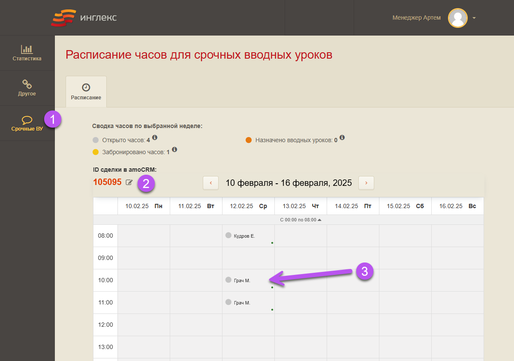
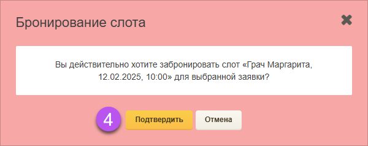
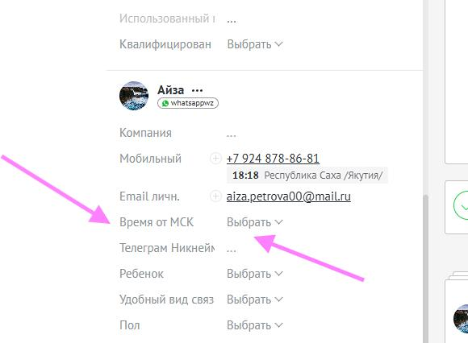
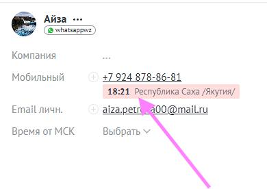
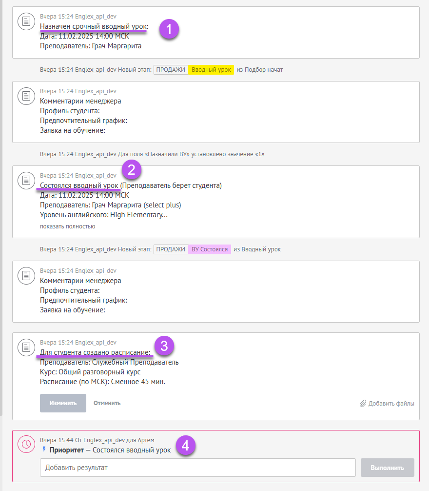
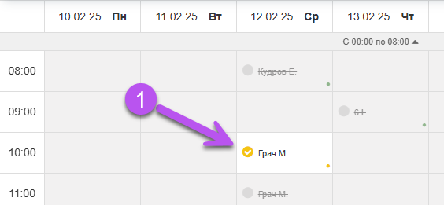
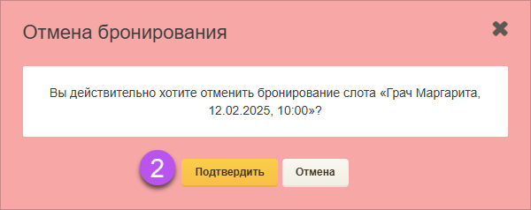
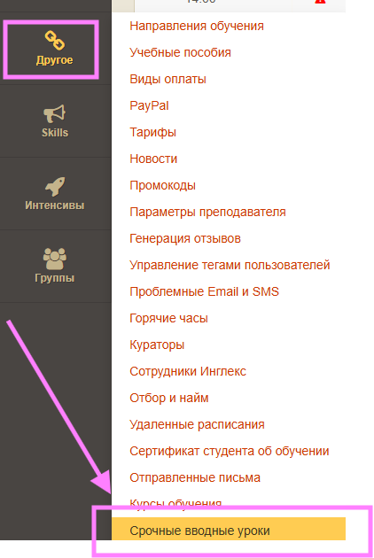
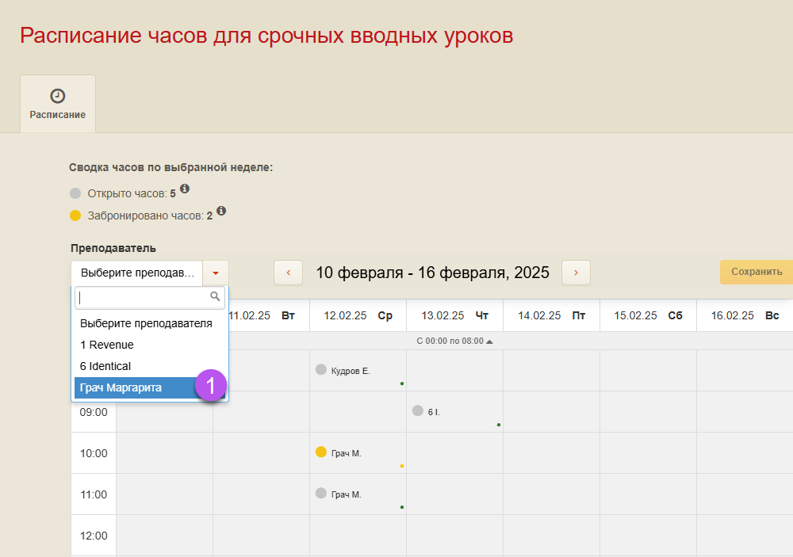
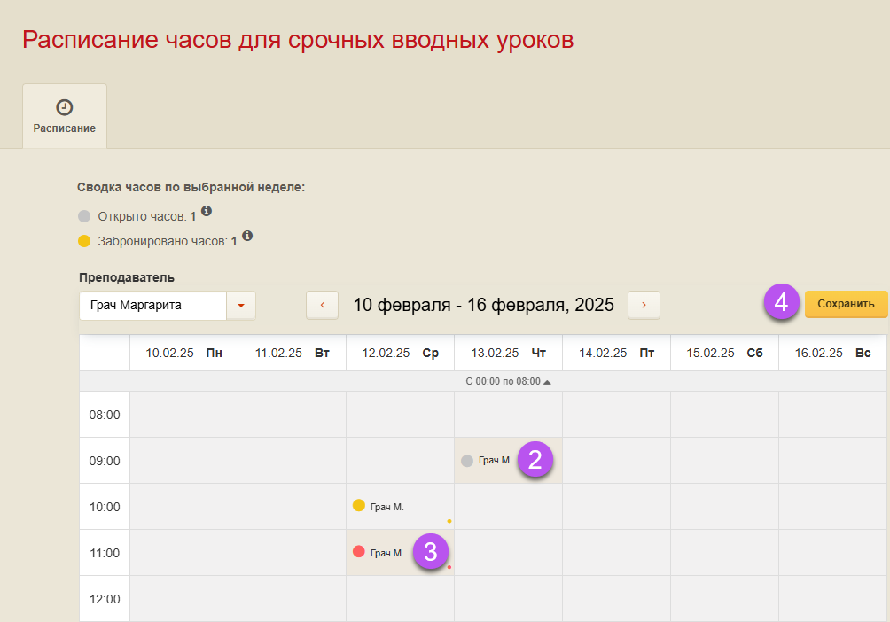

Было
После первого контакта студент проходил ВУ только после подбора основного преподавателя — это могло занимать несколько дней. За это время студент мог потерять интерес или уйти к конкурентам.
Быстрая запись на вводный урок без ожидания подбора основного преподавателя
Учитывайте часовой пояс студента — в Личном кабинете время московское.


Появится дополнительное СМС преподавателю «Был забронирован слот на такое-то время», а также уведомление на почту и в ЛК. Уведомление отправится после бронирования слота квалификатором — с этого момента преподаватель должен ожидать этот СВУ.
После первого СМС и уведомлений о бронировании слота в календаре преподавателя изменений не будет. СВУ отобразится только после автоназначения в ЛК.
При снятии брони со слота преподавателю придёт уведомление.
Сделка передаётся в стандартный процесс подбора преподавателя (обычный ВУ). Дополнительных действий в календаре СВУ в ЛК квалификатора не требуется.


Проверьте, ушла ли сделка в ЛК и назначился ли СВУ. Если нет — напишите менеджеру подбора из заявки. Возможны ложные срабатывания, если бронировали слот, а потом отправили на обычный ВУ.
Назначение и проведение ВУ, как и ранее, отражаются в amoCRM в виде примечаний и задач. После проведения ВУ преподаватель заполняет отчёт в системе. Если урок состоялся, для студента создаётся временное расписание для оплаты.

Координаторы принимают звонки по заявке и отвечают на вопросы до момента прохождения СВУ, если они будут.
Заявка продолжает обрабатываться по регламенту обычных вводных уроков. Координатор может предложить студенту новую дату и помочь перезаписаться.
Отмените бронирование слота в календаре срочных ВУ. После этого сделка возвращается в стандартный процесс подбора, и менеджер работает с ней как с обычной заявкой.





Закрывать забронированные слоты нельзя. Открыть можно только те слоты, до которых осталось не менее Х часов и не более Х дней с текущей даты.